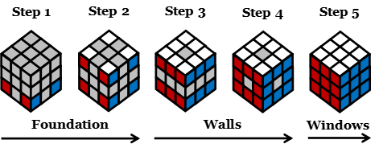

The 1980 Method Reborn
The Visual
Structural Method™
Structural Method™

An Intuitive Structure Based 3D Architectural Approach for Solving the 2×2 and 3×3 Cubes
Learn the cube through structure, visual rules, and a small number of visual pattern moves rather than relying on large collections of case specific algorithms.
A visual structural learning system that helps learners recognize structure, follow visual patterns, and build the cube through Foundation → Walls → Windows.
An approach in cubing that relies on only three visual pattern moves. Learners simply follow a familiar route pattern, like driving a known path and returning home.
As you solve, the cube grows naturally step by step, just like building a small house. Each stage adds a new structural layer, and the cube becomes clearer as it progresses.

The Visual Structural Method combines two complementary solving approaches. Steps 1, 3, and 5 are rule based steps that build, align, and protect the cube's structure. Steps 2 and 4 use visual pattern moves to make structural corrections while safely restoring the completed structure.
Build the Bottom Frame and Top Frame. Together they form a stable foundation and central pillar that guide the rest of the solve.
Build the first part of the foundation and establish the structural base of the cube.
Complete the foundation by building and aligning the Top Frame with the Bottom Frame.
Build and align the Top Wall, Bottom Wall, and Middle Wall while protecting the completed foundation and central pillar.
Build the first walls around the central pillar while protecting the completed foundation.
Complete the wall structure and prepare the cube for the final window alignment.
Complete the final window alignment while protecting the completed foundation and wall structure.
Step 5 uses the Center Rule together with the Step 3 Rule to align the remaining windows. Both rules preserve the completed structure while the final windows are brought into alignment. With the foundation and walls already complete, only the windows remain.
The cube remains readable throughout the solve. By following the structure protection rules, learners can continue from new structural patterns instead of relying on blind repetition or restarting their progress.
The Visual Structural Method is designed for learning rather than speedcubing. It helps learners understand the cube as a structure rather than a collection of formulas, creating a calm and confidence building learning experience. Although it is not designed as a speedcubing method, it is designed to simplify learning through a clear structural progression. Learners can see how the cube grows from Foundation to Walls to Windows, making each step easier to understand, remember, and practice.
This method is intended as an educational alternative to classic beginner LBL (Layer-By-Layer) learning approaches rather than a competitive speedcubing method.
© 2005-2026 Teckel. All rights reserved.
Visual Structural Method™ is an independently developed instructional system created by the author. All original text, diagrams, educational content, visual presentations, instructional layouts, website content, and teaching materials are protected by copyright. Unauthorized reproduction, distribution, recording, republication, or commercial use is prohibited.
This website uses the open source Twisty Player and cubing.js projects for cube visualization and animation playback. Demonstration scrambles are generated using the Twizzle tools within the cubing.js ecosystem. Twizzle, Twisty Player, and cubing.js are used in accordance with their applicable MPL-2.0 and GPL-3.0 open source license terms.
The Visual Structural Method™, including its Foundation → Walls → Windows learning framework, instructional presentation, original diagrams, written explanations, educational content, teaching materials, and demonstration sequences, is the original work of the author.
Learn to recognize and build visible cube structures, making every step clear, logical, and easy to follow.
See how the cube's structures are built, protected, and completed through visual recognition rather than algorithm selection.
First explored in the 1980s and continuously refined into a clear and accessible learning method for today's learners.
Practice each step independently with guided online training, adjustable speed, and no need to restart from the beginning.
Start with one of the three solved examples and follow along using your own cube. As each step comes together, you'll see how the Visual Structural Method builds the cube like a house, one structure at a time. Experience the satisfaction of completing a full solve from scramble to solution.
These demo sessions provide a brief introduction to the Visual Structural Method. The solved examples show how the method solves real scrambles step by step and allow you to experience the complete journey from Foundation → Walls → Windows using your own cube.
Whether you are solving your first cube or exploring a different way to understand it, this book makes learning clear, logical, and enjoyable.
An Amazon QR code for quick mobile scanning will be added here when the book is released.
The Visual Structural Method™ teaches the cube the same way a house is constructed: Foundation → Walls → Windows. Step by step, visually, and with complete structural clarity, it transforms the 2×2 and 3×3 cubes into structures you can see, understand, and confidently solve.
Instead of long formulas, you learn through clear patterns, simple rules and three gentle visual pattern moves. You see how corners form the permanent frame, how edges pair predictably, and how the cube rebuilds itself through stable and clear structural states. Every turn has purpose, nothing is random, and progress is never lost. Because the method is structural and visual, learners can follow a simpler and more predictable progression through the solve, and makes the entire solution easier to understand.
Created for children, parents, teachers, and all ages, this method replaces frustration with confidence. Whether you are learning for the first time or returning after years away, you will discover a calm and visual structural approach that makes the cube welcoming, logical, and beautifully understandable.
You will learn to: Understand the cube through clear visual patterns, build and protect the corner frame as the foundation, form Twin Edge Pairs with simple structural logic, reconstruct safely without losing progress, and solve the entire cube smoothly using only three visual pattern moves.
Teckel is an engineering leader and systems architect with deep experience in embedded systems, thermal imaging, and system level problem solving. He discovered the Visual Structural Method at age fourteen through pure observation and spatial intuition, without books or algorithms. His breakthrough came from one insight: the cube behaves like a house. Over the decades, he refined this discovery into a clear and accessible visual structural system that teaches the cube through architecture, visual logic, and intuitive understanding. Today, he shares this gentle, structural method with learners of all ages.